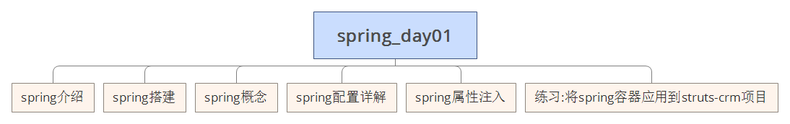
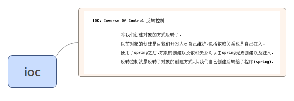
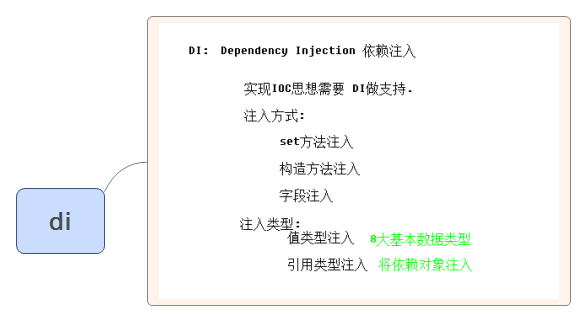
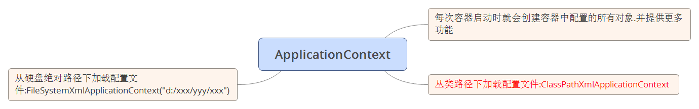
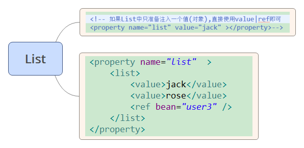
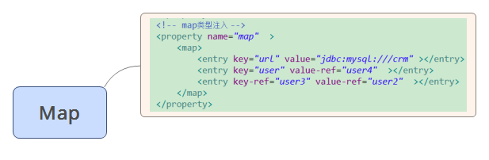
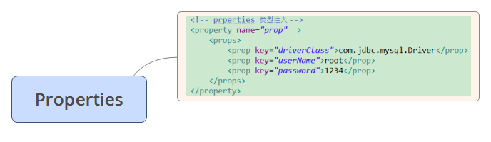

spring_day01

spring介绍
三层架构中spring位置
spring一站式框架
正是因为spring框架性质是属于容器性质的.
容器中装什么对象就有什么功能.所以可以一站式.
不仅不排斥其他框架,还能帮其他框架管理对象.
aop支持
ioc思想'
spring jdbc
aop 事务
junit 测试支持
spring搭建
1.导包
日志包
com.springsource.org.apache.log4j-1.2.15.jar 可选
2.创建一个对象
3.书写配置注册对象到容器
位置任意(建议放到src下) 配置文件名任意(建议applicationContext.xml)
导入约束
4.代码测试
spring概念
思想
ioc

di

applicationContext&BeanFactory
BeanFactory接口
spring原始接口.针对原始接口的实现类功能较为单一
BeanFactory接口实现类的容器.特点是每次在获得对象时才会创建对象
ApplicationContext

每次容器启动时就会创建容器中配置的所有对象.并提供更多功能
丛类路径下加载配置文件:ClassPathXmlApplicationContext
从硬盘绝对路径下加载配置文件:FileSystemXmlApplicationContext("d:/xxx/yyy/xxx")
结论:web开发中,使用applicationContext. 在资源匮乏的环境可以使用BeanFactory.
spring配置详解
Bean元素
Bean元素进阶
scope属性
singleton(默认值):单例对象.被标识为单例的对象在spring容器中只会存在一个实例
prototype:多例原型.被标识为多例的对象,每次再获得才会创建.每次创建都是新的对象.整合struts2时,ActionBean必须配置为多例的.
request:web环境下.对象与request生命周期一致.
session:web环境下,对象与session生命周期一致.
生命周期属性
配置一个方法作为生命周期初始化方法.spring会在对象创建之后立即调用.
init-method
配置一个方法作为生命周期的销毁方法.spring容器在关闭并销毁所有容器中的对象之前调用.
destory-method
spring创建对象的方式
1.空参构造方式
2.静态工厂(了解)
3.实例工厂(了解)
spring的分模块配置
spring属性注入
注入方式
set方法注入
构造函数注入
p名称空间注入
spel注入
复杂类型注入
数组
List

Map

Properties

练习:将spring容器应用到struts-crm项目
管理Service对象以及Dao对象
步骤
1.导包(4+2),再加1
spring-web-4.2.4.RELEASE.jar
2.将Service对象以及Dao对象配置到spring容器
3.在Action中获得容器中的Service对象
web.xml中配置容器随项目启动
在Action中获得容器
管理容器在项目中的生命周期
这是错误的示范.导致每次请求都创建新的容器


.jpg)
.jpg)


,%E5%86%8D%E5%8A%A01.jpg)